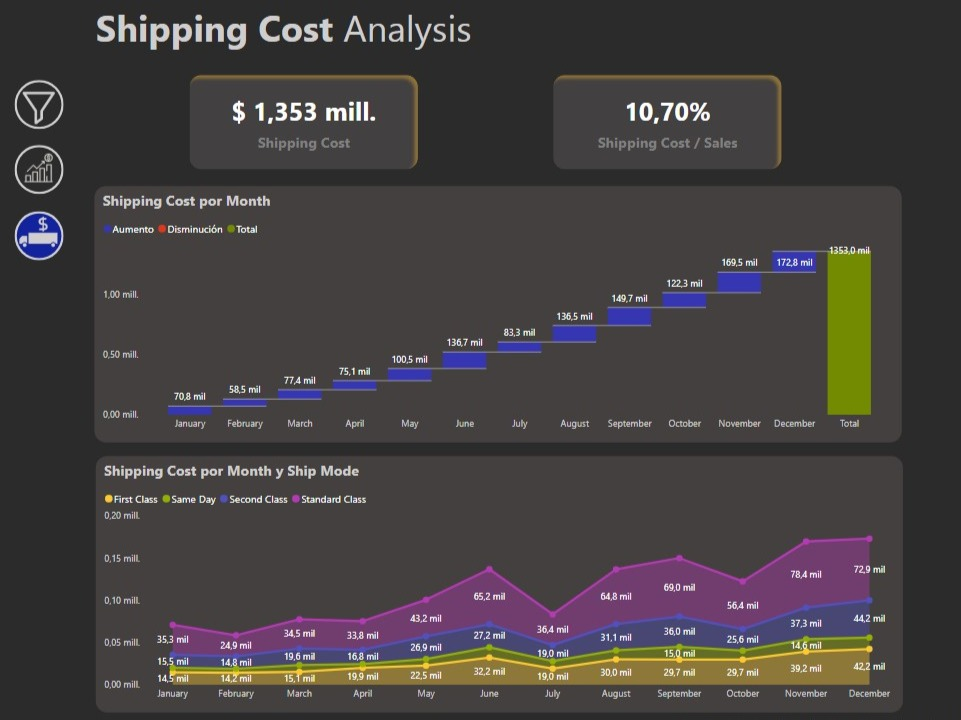
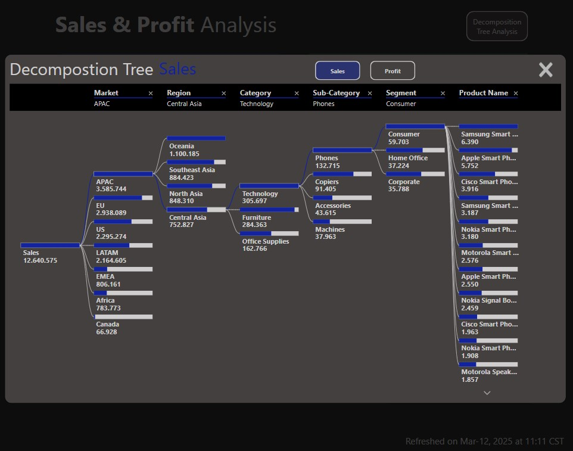
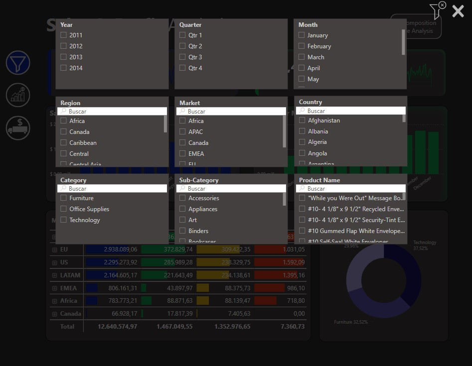

Overview
This Power BI dashboard provides a comprehensive analysis of sales, profit trends, and shipping costs. It enables stakeholders to track performance across different markets and product categories, while also identifying opportunities to optimize logistics by analyzing shipping costs by month and mode.
Key Features
DAX Measures
Here are some key DAX measures used in the dashboard:
SUBSTITUTE(FORMAT(SUM(Global_Superstore[Profit]) / 1000000, "$ #,0.000,,\"), ".", ",") & " mill."SUBSTITUTE(FORMAT(SUM(Global_Superstore[Sales]) / 1000000, "$ #,0.000,,\"), ".", ",") & " mill."SUBSTITUTE(FORMAT(SUM(Global_Superstore[Shipping Cost]) / 1000000, "$ #,0.000,,\"), ".", ",") & " mill."SUBSTITUTE(FORMAT(DIVIDE([Shipping Costt], [Saless]) * 100, "#,0.00,,\"), ".", ",") & "%"
VAR Defs = "<defs>
<linearGradient id='grad' x1='0' y1='25' x2='0' y2='50' gradientUnits='userSpaceOnUse'>
<stop stop-color='#119E4C' offset='0' />
<stop stop-color='transparent' offset='1' />
</linearGradient>
</defs>"
VAR XMaxDate = MAX(Global_Superstore[Order Date])
VAR XMinDate = EDATE(XMaxDate, -3)
VAR YMinValue = MINX(Values(Global_Superstore[Order Date]), CALCULATE([Profitt]))
VAR YMaxValue = MAXX(Values(Global_Superstore[Order Date]), CALCULATE([Profitt]))
VAR SparklineTable = ADDCOLUMNS(
SUMMARIZE('Global_Superstore', Global_Superstore[Order Date]),
"X", INT(150 * DIVIDE(Global_Superstore[Order Date] - XMinDate, XMaxDate - XMinDate)),
"Y", INT(60 * DIVIDE([Profitt] - YMinValue, YMaxValue - YMinValue))
)
VAR Lines = CONCATENATEX(SparklineTable, [X] & "," & 50-[Y], " ", Global_Superstore[Order Date])
VAR SVGImageURL =
"data:image/svg+xml;utf8," &
"<svg xmlns='http://www.w3.org/2000/svg' x='0px' y='0px' viewBox='0 0 150 50'>" & Defs &
"<polyline fill='url(#grad)' fill-opacity='0.3' stroke='#119E4C'
stroke-width='1' points=' 0 50 " & Lines &
" 150 150 Z '/></svg>"
RETURN SVGImageURL
VAR Defs = "<defs>
<linearGradient id='grad' x1='0' y1='25' x2='0' y2='50' gradientUnits='userSpaceOnUse'>
<stop stop-color='#119E4C' offset='0' />
<stop stop-color='transparent' offset='1' />
</linearGradient>
</defs>"
VAR XMaxDate = MAX(Global_Superstore[Order Date])
VAR XMinDate = EDATE(XMaxDate, -3)
VAR YMinValue = MINX(Values(Global_Superstore[Order Date]),CALCULATE([Saless]))
VAR YMaxValue = MAXX(Values(Global_Superstore[Order Date]),CALCULATE([Saless]))
VAR SparklineTable = ADDCOLUMNS(
SUMMARIZE('Global_Superstore', Global_Superstore[Order Date]),
"X",INT(150 * DIVIDE(Global_Superstore[Order Date] - XMinDate, XMaxDate - XMinDate)),
"Y", INT(60 * DIVIDE([Saless] - YMinValue, YMaxValue - YMinValue)))
VAR Lines = CONCATENATEX(SparklineTable,[X] & "," & 50-[Y]," ", Global_Superstore[Order Date])
VAR SVGImageURL =
"data:image/svg+xml;utf8," &
"<svg xmlns='http://www.w3.org/2000/svg' x='0px' y='0px' viewBox='0 0 150 50'>" & Defs &
"<polyline fill='url(#grad)' fill-opacity='0.3' stroke='#119E4C'
stroke-width='1' points=' 0 50 " & Lines &
" 150 150 Z '/></svg>"
Power Query Transformations
Data was cleaned and transformed using Power Query:
Results and Insights
The dashboard revealed key insights:
Sales & Profit Analysis

The primary dashboard provides a clear and detailed view of total sales and profits, broken down by market, category, and monthly trends.
Shipping Cost Analysis
The waterfall chart is a powerful tool for understanding how shipping costs evolve month by month, breaking down increases (in blue) and decreases (in red).
This type of visualization is ideal for identifying seasonal patterns and key moments of increase or decrease, allowing us to investigate the reasons behind these variations (e.g., higher shipment volumes, rate changes, etc.). The cumulative total (in green) provides a clear view of the net impact over the year.
The second chart breaks down costs by shipping mode (First Class, Same Day, Second Class, and Standard Class). This analysis is crucial for understanding how costs are distributed across different shipping options.
Decomposition Tree Analysis
The Decomposition Tree is a game-changer for breaking down metrics and understanding what drives them. Its dynamic functionality lets you interactively select breakdowns, exploring data across dimensions like market, region, category, or product.
Filter Pane
The filter panel enables dynamic data exploration, allowing segmentation by year, quarter, month, region, market, category, and even down to the product level. This ensures users can drill into the details that matter most, from regional analysis to a product-specific focus.